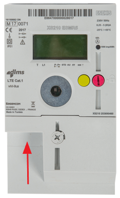

Scrol naar beneden voor meer!
Druk niet direct op de groene knop onderaan dit scherm, maar zorg dat u eerst de slimmemetermodule, de cv-ketelmodule en de woonkamermodule hebt aangesloten, gekoppeld en geplaatst.
U hebt zonet de QR-code van de slimmemetermodule gescand. Steek de losse stekker van de slimmemetermodule in de P1-poort van uw slimme meter.

De P1-poort zit bij veel slimme meters aan de voor- of onderkant. Soms zit er een klepje voor dat u makkelijk kunt loshalen.
Als uw P1-poort bezet is, gebruik dan de meegeleverde splitter: verwijder eerst de stekker die de P1-poort bezet houdt, steek daarna de losse stekker van de splitter in de P1-poort en steek tenslotte de twee losse stekkers in de 2 vrije poorten van de splitter.
Als u ook een USB-voeding heeft ontvangen, steek dan de micro-USB stekker in de zijkant van de slimmemetermodule (past maar op één manier), en steek daarna de 230V-stekker in een vrij stopcontact in de buurt van uw slimme meter.
Plaats de slimmemetermodule niet pal naast uw Wi-Fi router, anders wordt de communicatie met de andere modules straks niet misschien gestoord.
Als de slimmemetermodule goed is aangesloten, knippert er één keer vaag een groen lampje.
De cv-ketelmodule herkent u aan de 2 klemmen die er met draadjes aan vast zitten.
De woonkamermodule lijkt op de cv-ketelmodule, maar heeft géén klemmen die er met draadjes aan vast zitten.
Het koppelen van de cv-ketelmodule gaat hetzelfde als het koppelen van de cv-ketelmodule: batterij activeren (lipje lostrekken), binnen 1 m van slimmemetermodule houden, eerst kort knopje woonkamermodule indrukken, daarna kort knopje slimmemetermodule indrukken.
Neem daarna de woonkamermodule mee naar uw woonkamer en plaatst hem zo dicht mogelijk bij uw thermostaat. Plaats de module zodat, net zoals bij een thermostaat, u opwarming van de module door direct zonlicht en en kaarsen vermijdt. Vermijd ook dat de module op de tocht staat, bijvoorbeel vlak bij een deur die vaak open gaat.
Als u de slimmemetermodule, de cv-ketelmodule en de woonkamermodule aangesloten, gekoppeld en geplaatst hebt heeft u alles gedaan. Druk dan op de knop "Ok, heb ik gedaan" hieronder.